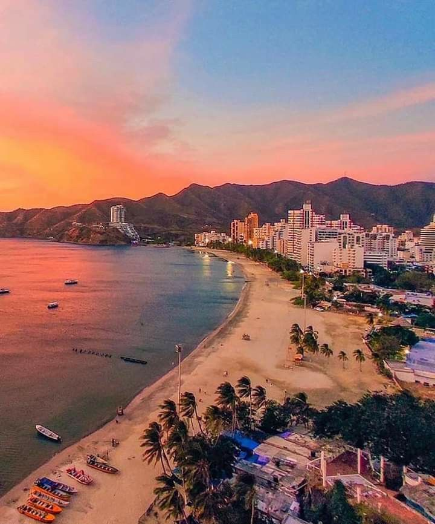
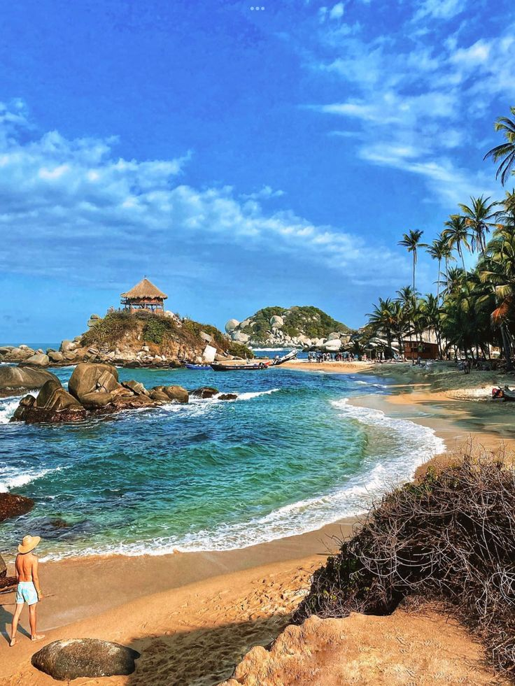
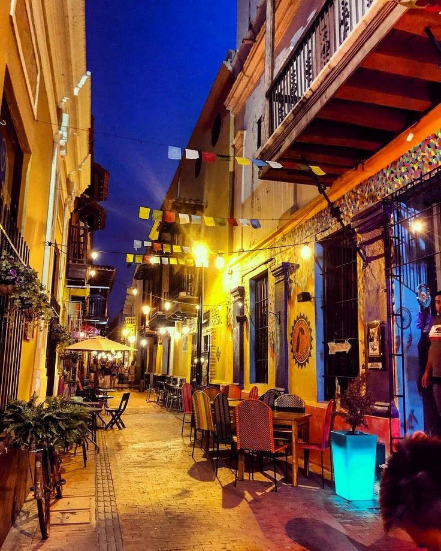

Descubre el Magdalena
El Magdalena es un destino turístico privilegiado en Colombia, con Santa Marta como ciudad principal y acceso al Parque Tayrona, la Sierra Nevada y playas de ensueño sobre el mar Caribe. Es una región que combina cultura, naturaleza y aventura en cada recorrido.
En A&G TOURS ofrecemos transporte turístico y empresarial en Magdalena, asegurando traslados cómodos y seguros hacia los principales atractivos como el centro histórico de Santa Marta, Taganga, Minca y el Parque Nacional Natural Tayrona.
Con nosotros disfrutas de un turismo en Magdalena pensado para familias, empresas y viajeros internacionales, siempre con profesionalismo, puntualidad y el respaldo de una empresa confiable.
El Rodadero
Uno de los balnearios más famosos de Colombia, ubicado en Santa Marta. Sus aguas tranquilas y arenas blancas lo convierten en un lugar ideal para disfrutar del sol, practicar deportes acuáticos y vivir la vida nocturna frente al mar Caribe.

Ciudad Perdida (Teyuna)
Un antiguo asentamiento indígena Tayrona escondido en la Sierra Nevada de Santa Marta. Para llegar se realiza una caminata de varios días a través de la selva, ríos y montañas, lo que la convierte en una experiencia única de aventura, cultura y conexión espiritual.
Parque Nacional Natural Tayrona
El Parque Tayrona es uno de los destinos más icónicos de Colombia. Sus playas vírgenes, selva tropical y montañas que se funden con el mar Caribe ofrecen un paisaje único. Es perfecto para practicar senderismo, descansar en playas paradisíacas como Cabo San Juan y conocer la riqueza cultural de los pueblos indígenas de la Sierra.
Minca, paraíso en la montaña
A solo 30 minutos de Santa Marta, Minca es un destino ecoturístico rodeado de montañas, ríos y cascadas. Famoso por su café de origen y paisajes de la Sierra Nevada, es ideal para quienes buscan tranquilidad, caminatas ecológicas y vistas espectaculares del Caribe.
Centro Histórico de Santa Marta
Fundada en 1525, Santa Marta es la ciudad más antigua de Suramérica. Su centro histórico ofrece calles coloniales, la Catedral Basílica, plazas vibrantes y una vida cultural que mezcla modernidad y tradición. Un recorrido obligado para quienes desean conocer la esencia del Caribe colombiano.
Quinta de San Pedro Alejandrino
Este lugar histórico fue la última morada del Libertador Simón Bolívar. La Quinta de San Pedro Alejandrino conserva jardines, arquitectura colonial y un museo que rinde homenaje a la independencia. Un sitio donde la historia de Colombia cobra vida.
Fiestas del mar
El Festival del Mar se celebra anualmente en Santa Marta, rindiendo homenaje a la cultura y tradiciones costeras. Durante esta festividad, la ciudad se llena de color y alegría con desfiles, conciertos y exposiciones dedicadas a las flores, que son un símbolo de la región. El evento principal es el famoso Desfile de las Flores, donde se exhiben coloridos carros alegóricos y se celebra la diversidad cultural de la costa caribeña.
Ciénaga Grande de Santa Marta
La Ciénaga Grande de Santa Marta es el humedal más importante de Colombia y un santuario de fauna y flora declarado Reserva de la Biosfera por la UNESCO. Es hogar de cientos de especies de aves, peces y manglares que forman paisajes únicos. También se destacan sus pueblos palafitos, como Trojas de Cataca y Bocas de Aracataca, donde las comunidades viven sobre el agua. Es un destino ideal para el ecoturismo y la fotografía natural.
¡Contáctanos!